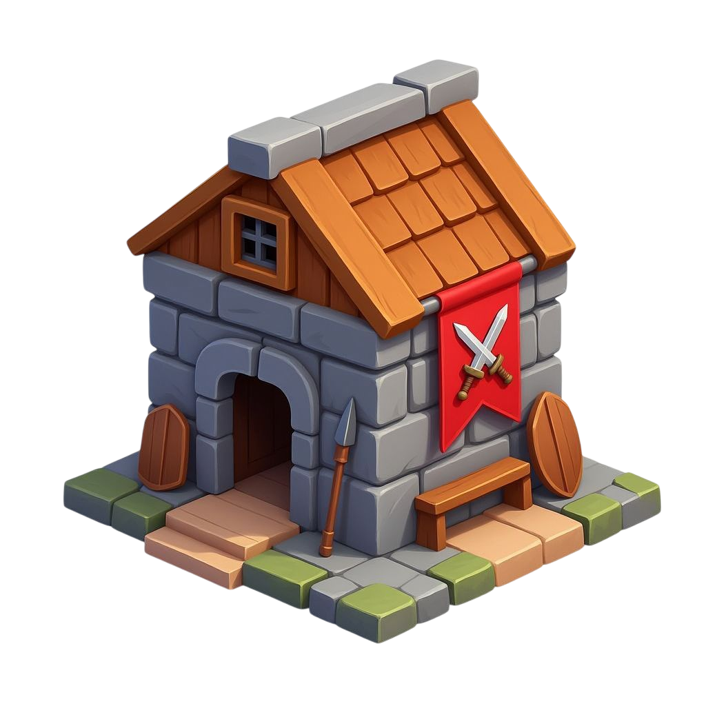

Construction terminée
Caserne · Niv. 2 prêt au combat.

Entraînement lancé
24 squires · arrivée dans 1h 12m.

Entrepôt presque plein
9.800 / 10.000 bois — pensez à dépenser.
Attaque détectée
Sire_Robert marche sur votre village · 02:15:47.